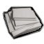
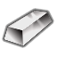
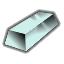
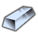

透明与增强玻璃类(stuffProps 含 Glass):独占窗户/天窗/玻璃台面/自动门等约 31 件透明件
窄用级·电力工业·加工玻璃 Glass
窄用途家具建筑32防具1近战工具1共34件 价值5 质量0.15 护甲—/—/— 利钝—/—
Core_SK · def自带→电力工业(前期) · Things/Item/Glass
窄用级·电力工业·强化玻璃块 ReinforcedGlass
窄用途家具建筑32防具1近战工具1共34件 价值20 质量0.25 护甲1.20/1.50/0.11 利钝1.50/1
Core_SK · def自带→电力工业(前期) · Things/Item/ReinforcedGlass
工程陶瓷/军规陶瓷(stuffProps 含 Ceramic)

Normal Ceramic Ceramics兼金属类
窄用途家具建筑70共70件 价值12 质量0.40 护甲—/—/— 利钝—/—
Core_SK · def自带→电力工业(前期) · Things/Item/Resource/Ceramics
HSK 官方贵重品体系:`Extracted/Metals/PRS`(宝石·化石·未炼金银·翡翠)+ `RK_Gems` + `Metallic/RARBar` 里材质覆盖≤2 的提纯金属与焊料(纯铬/纯钴/纯镍/纯钨/钒/锰/钼/锌/焊锡/纯银)。只作收藏·贸易·珠宝原料·合金添加剂,**不上能力档阶梯(标 V)**;唯一例外是翡翠(石质覆盖 299 件),仍在阶梯内按石质算
贵重级·电力工业·纯镍（Ni） NickelBar兼金属类
V家具建筑2共2件 价值12 质量0.45 护甲—/—/— 利钝—/—
Core_SK · def自带→电力工业(前期) · Things/Item/Ingot


贵重级·电力工业·锌（Zn） Zinc
V共0件 价值15 质量0.40 护甲—/—/— 利钝—/—
Vile's Materials Science · def自带→电力工业(前期) · Things/Item/Ingot

贵重级·电力工业·锰（Mn） Manganese
V共0件 价值15 质量0.40 护甲—/—/— 利钝—/—
Vile's Materials Science · def自带→电力工业(前期) · Things/Item/Ingot